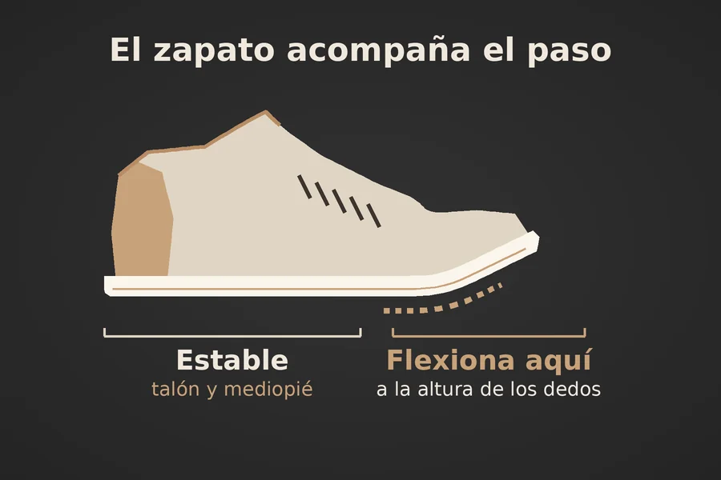
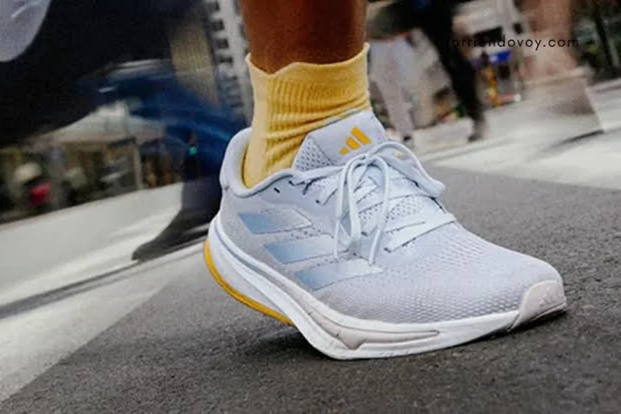
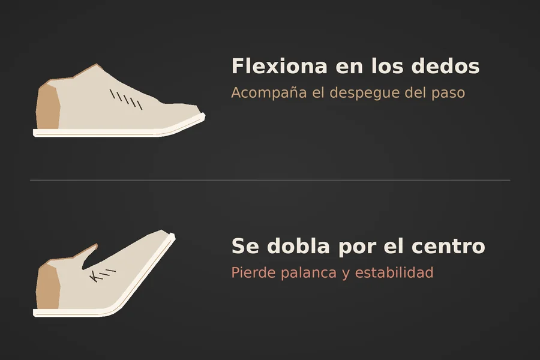
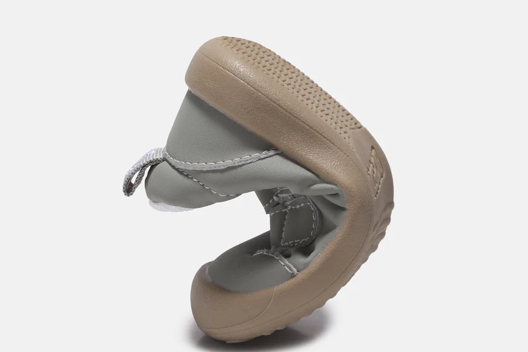

El zapato debe acompañar al pie
Para el calzado diario, no se recomienda usar zapatos que se doblen, se aplasten o se retuerzan excesivamente por el centro. El calzado debe acompañar el movimiento natural del pie: estable en el talón y mediopié, flexible principalmente en el antepié, a la altura donde se doblan los dedos.

Dónde debe flexionar
Durante la marcha, el peso pasa desde el talón hacia el antepié y termina en el despegue. En esa fase, se flexionan las articulaciones metatarsofalángicas, es decir, la unión entre los metatarsianos y los dedos, especialmente la del dedo gordo.
Por eso, una suela saludable debe doblarse en esa zona. Si se flexiona por el arco plantar o se pliega por la mitad, el zapato no acompaña el patrón mecánico normal del paso.


El mediopié no es una bisagra
El mediopié —formado por los huesos navicular, cuboides y cuñas— conecta el retropié con el antepié y participa en la estabilidad de los arcos plantares. Su función es transmitir carga y ayudar al pie a comportarse como una palanca firme al impulsarse.
Cuando el zapato se “desmoldea” o se tuerce fácilmente en el mediopié, puede permitir movimientos excesivos durante el apoyo. Esto obliga a los músculos y ligamentos del pie y tobillo a trabajar más para mantener la alineación.
Consecuencias de un calzado hiperflexible
- Menos estabilidad: un talón o mediopié demasiado blandos pueden favorecer que el pie se desplace o rote más de lo necesario durante la caminata.
- Mayor fatiga: los músculos intrínsecos del pie, tibial posterior, peroneos y pantorrilla deben estabilizar continuamente el apoyo.
- Carga irregular: al deformarse la suela, la presión puede concentrarse bajo el talón, el arco o las cabezas metatarsianas, favoreciendo dolor plantar o metatarsalgia en personas susceptibles.
- Menor eficiencia al caminar: para impulsarse, el pie necesita transformarse temporalmente en una palanca relativamente firme. Un zapato que se pliega por el centro absorbe parte de esa energía.
- Compensaciones ascendentes: si el apoyo es inestable, algunas personas cambian la mecánica de tobillo, rodilla y cadera, especialmente tras muchas horas caminando o de pie.
Cómo debería comportarse
| Área | Comportamiento adecuado |
|---|---|
| Talón | Contrafuerte relativamente firme, que mantenga el calcáneo estable |
| Mediopié | Estructura resistente a doblarse y retorcerse en exceso |
| Antepié | Flexión alineada con las articulaciones de los dedos |
| Puntera | Ancha y profunda para no comprimir ni limitar la expansión de los dedos |
| Ajuste | Cordones, velcro o cierre que evite que el pie se deslice |
| Suela | Estable, con agarre adecuado y amortiguación proporcional al uso |
Una prueba sencilla
Sujeta el zapato con ambas manos: debe doblarse hacia arriba cerca de la base de los dedos, pero no debería doblarse fácilmente por el arco ni enrollarse o torsionarse como si fuera una tela.

Aplicación al gimnasio
Para el gimnasio, la estabilidad del mediopié es todavía más relevante en ejercicios de fuerza, equilibrio, zancadas, sentadillas y cargas unilaterales. Un calzado excesivamente deformable crea una base menos predecible para transmitir fuerza al suelo.
En cambio, el trabajo sin calzado o con una opción muy flexible puede reservarse para ejercicios concretos, de baja carga y realizados progresivamente, siempre que el gimnasio lo permita y que no haya dolor ni inestabilidad.
Conoce todo lo que tratamos en nuestra página de podología o lee más en el Blog de BeautyPod. Sigue la serie con riesgos del calzado al entrenar, tipo de zapatilla para hipertrofia y tipo de zapatilla para running y caminatas.